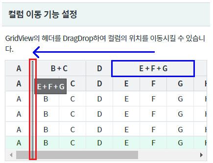
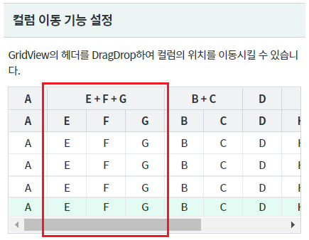
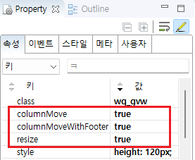
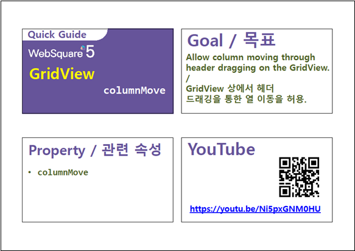
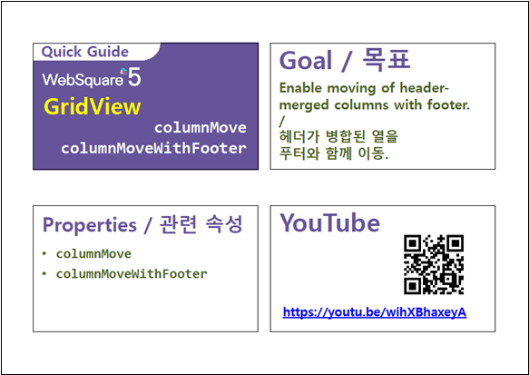

GridView의 컬럼 이동 기능 예제입니다. 마우스로 헤더 컬럼을 DragDrop하여 위치를 이동 시킬 수 있습니다.
컬럼 이동 기능 설정
컬럼 이동 기능 미설정(기본)
헤더 컬럼 [E + F + G]를 헤더 컬럼 [B + C] 앞쪽까지 Drag&Drop합니다.
(컬럼간의 선 영역은 컬럼의 너비 조절 기능이 동작되므로 컬럼의 중앙을 선택하여 조작합니다.)
[브라우저(Chrome) 실행 예시]

컬럼의 위치가 이동한 것을 확인합니다.
[브라우저(Chrome) 실행 예시]

STEP1. GridView의 속성을 정의합니다.
[필수] resize="true" //[default:true, false] 컬럼 드래깅을 통한 컬럼 폭 조절 허용.
[필수] columnMove="true" //[default:false, true] 헤더 드래깅을 통한 컬럼 이동을 허용.
[선택] columnMoveWithFooter="true" //[default: false, true] 컬럼 이동 시 푸터를 함께 이동. footer가 있는 경우 선택적으로 지정합니다.
그림 1.웹스퀘어5 SP5 스튜디오의 Property View(속성창) 예시

[소스 코드 예시]
<!-- gridView 의 소스 본문 예시 --> <w2:gridView resize="true" columnMove="true" columnMoveWithFooter="true" dataList="data:dlt_exam1"> <!-- 중략 --> </w2:gridView>
resize
columnMove
columnMoveWithFooter
[웹스퀘어5 SP5 개발 가이드] GridView
링크 : https://docs1.inswave.com/sp5_user_guide/bc10c1b82c9a2a0b#e1c4658baf7e726f
[웹스퀘어5 SP5 개발 가이드] GridView 컬럼 이동
링크 : https://docs1.inswave.com/sp5_user_guide/86bdcf48029b958b#28c0e98af8c69200
GridView 헤더 드래깅을 통한 컬럼 이동
링크 : https://youtu.be/Ni5pxGNM0HU

GridView 헤더가 병합된 컬럼을 푸터와 함께 이동
링크 : https://youtu.be/wihXBhaxeyA
